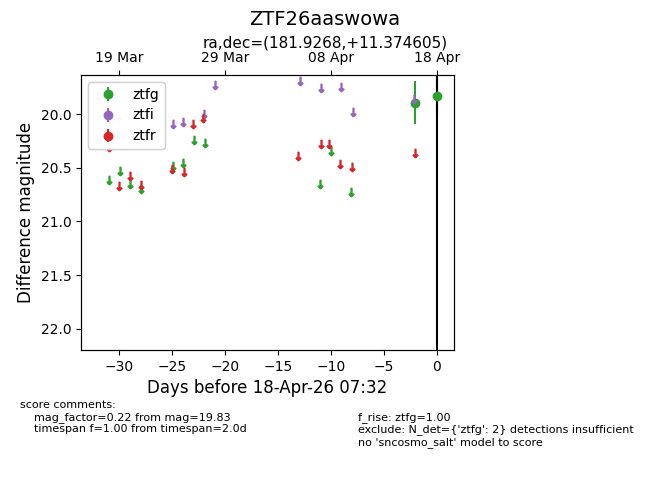
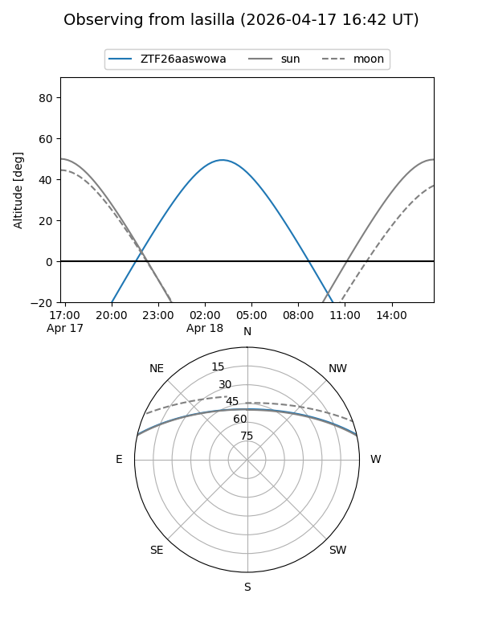
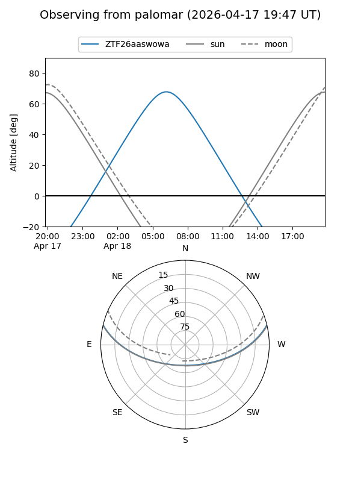

ZTF26aaswowa
Target ZTF26aaswowa at 2026-04-18 07:36
Aliases and brokers:
FINK: link
Lasair: link
ALeRCE: link
alt names
ZTF26aaswowa (ztf,fink_ztf)
Coordinates:
equatorial (ra, dec) = 181.9268,+11.37461
equatorial (HMS+DMS) = 12:07:42.42,+11:22:28.58
galactic (l, b) = (267.7129,+71.19168)
Flags:
Photometry:
last ztfg=19.83
2 ztfg detections
Lightcurve

Visibility


Additional plots